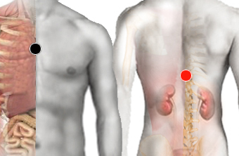

Problemas sanguíneos "Lucio"
esternón - suprarrenal
dorsal 2 - dorsal 2
timo - cardias
dorsal 3 - dorsal 7
ciático - dorsal 7

Generalidades:
Problemas de sangre: Poliglobulia (exceso de glóbulos rojos en la sangre). Talasemia (defectos en la síntesis de la hemoglobina), o Anemia del Mar Mediterráneo. Policitemia que provoca ojos rojos y coloración facial magenta. Anemias, Leucemias ,
Alteraciones hormonales.
Ayuda a controlar el Enfisema Pulmonar.
Hepatitis L